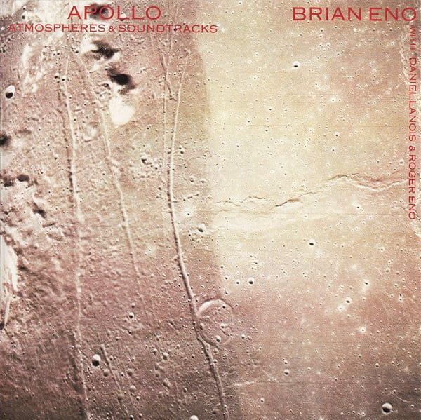

Tonality in ambient music is often stable and designed to create a consistent atmosphere. Many ambient pieces remain in the same key for long periods of time, helping to establish a calm and immersive sound world. Composers frequently avoid strong cadences and dramatic harmonic changes, allowing the music to feel open and spacious. Some ambient works blur the distinction between major and minor, creating moods that are difficult to define but highly expressive.
Example:
An ambient piece may remain in a single key throughout, using repeated harmonies and sustained sounds to create a continuous and reflective atmosphere rather than dramatic changes in mood.